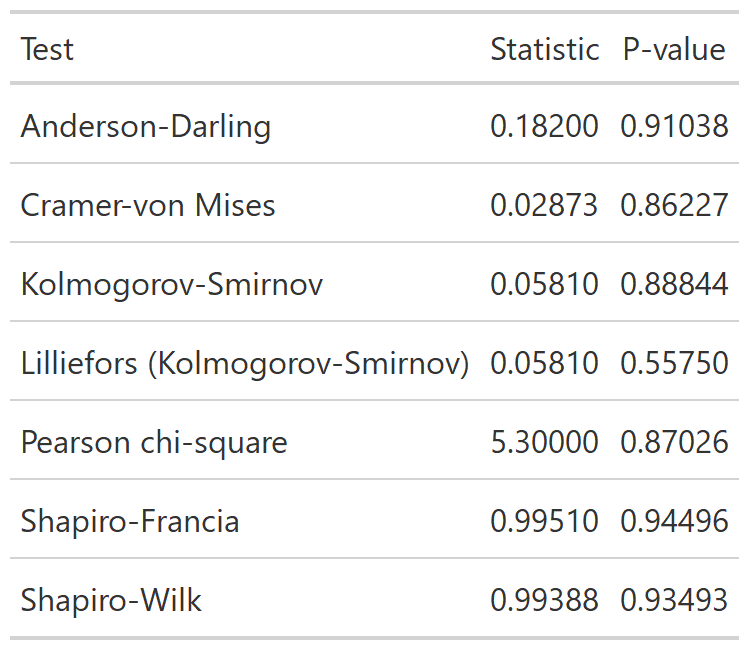
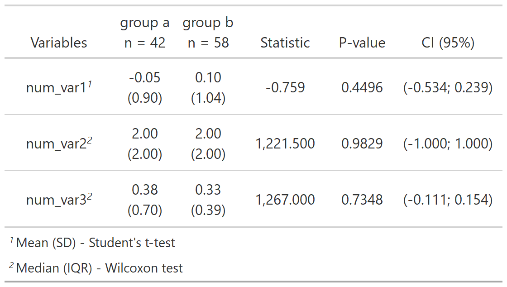

Functions stat_
functions_stat.Rmdstat_ functions apply statistical methods and show the
results in an gt table, let’s create a example data.frame
to apply them.
set.seed(1234);df <-
data.frame(
grp_var = sample(paste("group", letters[1:2]),size = 100,replace = TRUE),
cat_var1 = sample(letters[1:3],size = 100,replace = TRUE),
cat_var2 = sample(letters[25:26],size = 100,replace = TRUE),
num_var1 = rnorm(100),
num_var2 = rpois(100,2),
num_var3 = rexp(100,2)
)stat_normality
The goal of stat_normality is to test the normality of
the data.
set.seed(123);x <- rnorm(100)
stat_normality(x,digits = 5)
#> # A tibble: 7 × 4
#> test statistic p_value is_normal
#> <chr> <dbl> <dbl> <lgl>
#> 1 Anderson-Darling 0.182 0.910 TRUE
#> 2 Asymptotic one-sample Kolmogorov-Smirnov 0.0581 0.888 TRUE
#> 3 Cramer-von Mises 0.0287 0.862 TRUE
#> 4 Lilliefors (Kolmogorov-Smirnov) 0.0581 0.558 TRUE
#> 5 Pearson chi-square 5.3 0.870 TRUE
#> 6 Shapiro-Francia 0.995 0.945 TRUE
#> 7 Shapiro-Wilk 0.994 0.935 TRUEYou can also print as a gt table, by setting the
argument print to TRUE.

Result of the function stat_normality.
stat_two_cat
The goal of stat_two_cat is to create a frequency table
with chi-square statistic, p-value and Cramer’s V.
df %>%
stat_two_cat(
df = .,
grp_var = grp_var,
vars = c(cat_var1,cat_var2)
)
Result of the function stat_two_cat.
stat_two_num
The goal of stat_two_num is to create a summary table
comparing one or more numerical variables between two groups.
df %>%
stat_two_num(
df = .,
grp_var = grp_var,
num_vars = c(num_var1,num_var2,num_var3)
)

Result of the function stat_two_num.